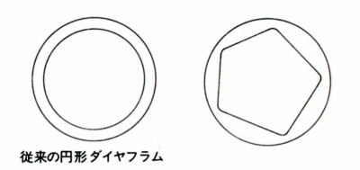
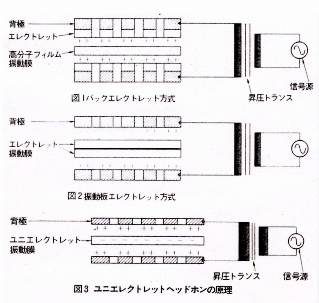
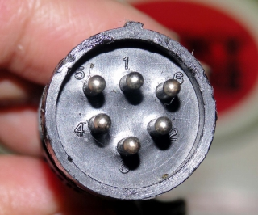
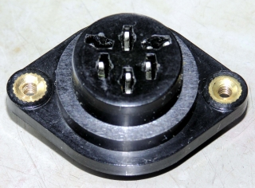

ソニーのコンデンサー型の特徴について
SONYのコンデンサー型ヘッドフォンには、エレクットレット・コンデンサー型に属するECR-400,500,600と外部バイアスを供給する純コンデンサー型のECR-800があります。
�@不等辺五角形のペンタダイヤフラム
コンデンサー型でも円形のダイヤフラムが主流でしたが、ソニーのコンデンサー型はすべて不等辺五角形のペンタダイヤフラムを採用しています。相対する辺がないため分割共振がおきにくく、高域のあばれが少ないとしています。

�Aユニエレクトレットダイヤフラム
エレクットレット・コンデンサー型に属するECR-400,500,600については膜エレクトレット型に属するユニエレクトレットダイヤフラムを採用しています。

エレクットレット・コンデンサー型は背極にエレクトレットを配したバックエレクトレット方式（採用例 オーレックス、テクニカ）と振動膜にエレクトレットを配した膜エレクトレット方式に分かれます。一般的な膜エレクトレット方式は図2のような複数の膜を重ね合わせた構造が多い（採用例 フォンテックリサーチ）のですが、そうした場合、バックエレクトレット方式や純コンデンサー型と比較すると振動膜の厚さで不利（＊1）になります。そこでSONYは振動膜に直接電荷を埋め込む方式を採用し、ユニエレクトレットダイヤフラムとしました。この構造によりECR-400,500で厚さ5ミクロン（＊2）、改良されたECR-600では厚さ3ミクロンを達成しました。
＊1 ちなみに純コンデンサー型のECR-800は2ミクロン、またバックエレクトレット方式のテクニカのATH-8も2ミクロンである。また不利とされた複数の膜を重ね合わせた構造の膜エレクトレット型でもフォンテックリサーチは厚さ4ミクロンを達成している。
＊2 ソニーの1976年9月版のカタログによれば5ミクロンとなっているが、「neoTT」氏所有の取扱説明書では6ミクロンとなっている。これが、製品の改良による差異かは不明である。
�B片互換性の確保
スタックスの場合、エレクットレット・コンデンサー型と純コンデンサー型の間には、エレクットレット・コンデンサー型のヘッドフォンは純コンデンサー型のアダプターで支障なく使用できる片互換性が確保されていますが、ソニーもエレクットレット・コンデンサー型に属するECR-400,500,600を純コンデンサー型のECR-800のアダプターに接続できる片互換性を持っています。


(ECR-800のプラグとジャック 5番、6番ピンがバイアス供給用ピンで音楽信号用の1〜4番ピンの配置はECR-400,500,600と同じ）